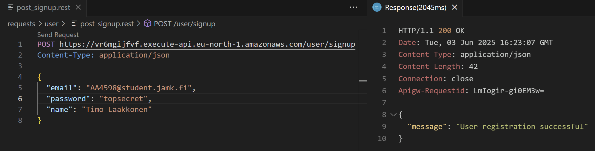

signup
Returns the jsonwebtoken with user name if authentication is succesful.
user/
└── signup.js
sequenceDiagram
autonumber
participant Client
participant AWS as AWS: signup
participant Cognito
activate AWS
Note left of AWS: .../user/signup
Client->>AWS: request (user data)
alt Insertion Successful
AWS->>Cognito: Insert user data
Cognito-->>AWS: Acknowledge insertion
AWS-->>Client: status 200 (Signup successful)
else Insertion Failed
AWS-->>Client: status 401 (Saignup failed, user exists)
end
deactivate AWS
- client requests for signup
- user data (email and password) is inserted into Cognito if email not already exists
- information of the successful is returned
- if insertion is successful status code 200 is returned to the client
- if insertion fails status code 500 is returned to the client
Definition for serverless.yml
functions:
signupUser:
handler: user/signup.handler
events:
- httpApi:
path: /user/signup
method: post
Endpoint
| Endpoint Url | HTTP Method |
|---|---|
| https://vr6mgijfvf.execute-api.eu-north-1.amazonaws.com/user/signup | POST |
Request
| Name | Type | Description |
|---|---|---|
| string | email of user | |
| password | string | given secret password |
| name | string | name of user |
Response
| Name | Type | Description |
|---|---|---|
| statuscode | number | 200 on success, 500 on failure |
Testing
requests/
└── user/
└── post_signup.rest
POST https://vr6mgijfvf.execute-api.eu-north-1.amazonaws.com/user/signup
Content-Type: application/json
{
"email": "AA4598@student.jamk.fi",
"password": "topsecret",
"name": "Timo Laakkonen"
}
On success 
Amazon Cognito > User pools > serverless-auth-pool > Users

On failure